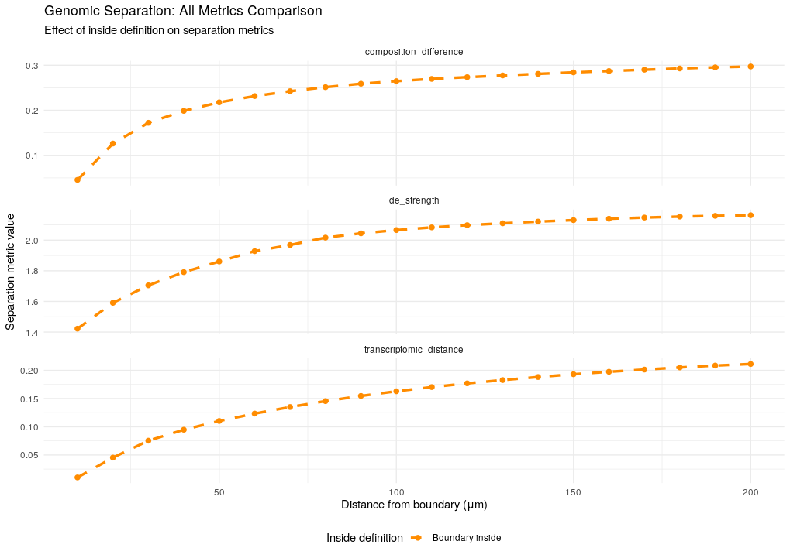
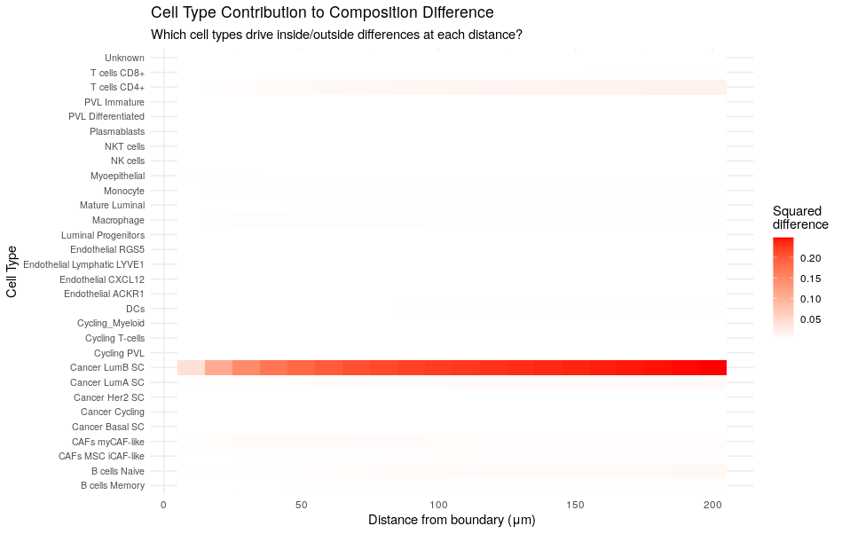
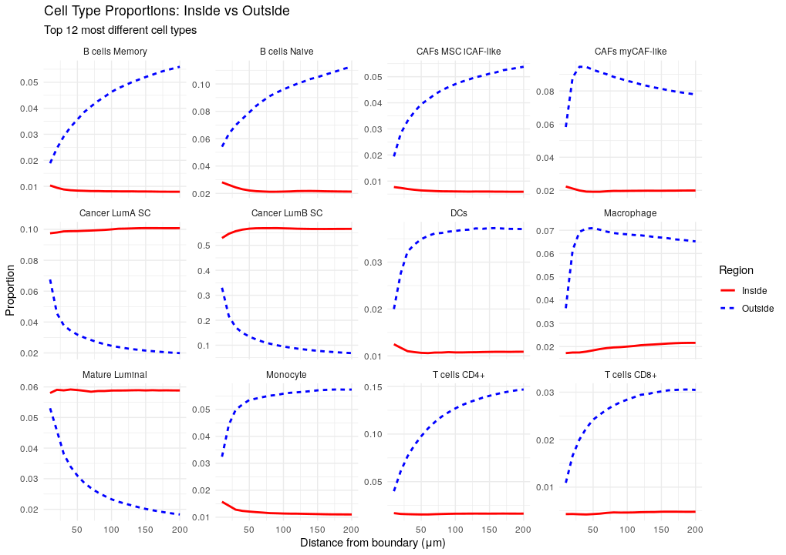

Distance Metrics
distance-metrics.RmdIntroduction
The core of stGradient is analyzing how genomic features change as a function of distance from tumor boundaries. This vignette covers boundary distance calculation, the available separation metrics, and how to run a distance profile analysis.
Calculating Boundary Distances
After defining regions (see Region Selection), compute signed distances from each cell to the nearest polygon boundary:
library(stGradient)
seurat_obj$boundary_distance <- calculate_boundary_distances(seurat_obj, auto_polygons)Distances are signed:
- Negative values = cells inside the polygon (tumor)
- Positive values = cells outside the polygon (stroma/microenvironment)
Available Metrics
stGradient computes three complementary separation metrics:
Transcriptomic Distance
Measures overall gene expression dissimilarity between cell groups (1 - Pearson correlation of mean expression profiles).
td <- calculate_transcriptomic_distance(inside_cells, outside_cells, seurat_obj)- Range: 0 (identical) to 2 (anti-correlated)
- Higher values = greater expression differences
Composition Difference
Sum of squared differences in cell type proportions between inside and outside groups.
cd <- calculate_composition_difference(inside_cells, outside_cells, seurat_obj, group_by = "cellType")- Range: 0 (identical composition) to ~2
- Independent of sample size
Differential Expression Strength
Mean absolute log2 fold-change of the top 100 DE genes between groups.
de <- calculate_de_strength(inside_cells, outside_cells, seurat_obj)- Higher values = stronger transcriptional changes at the boundary
Distance Profile Analysis
The main analysis function calculates all metrics across a range of distances:
results <- calculate_distance_profile(
seurat_obj = seurat_obj,
distance_thresholds = seq(10, 200, by = 10),
metric = "all",
group_by = "cellType",
inside_mode = "all"
)
distance_profile <- results$profile
celltype_contributions <- results$celltype_contributionsUnderstanding Inside Modes
stGradient supports two modes for defining the “inside” cell group:
| Mode | Inside Cells | Outside Cells | Use Case |
|---|---|---|---|
"all" |
All cells inside polygon | Cells outside within distance threshold | How does the entire tumor differ from surrounding tissue? |
"distance" |
Only cells inside within distance threshold | Cells outside within distance threshold | How do cells at the tumor edge compare on both sides? |
# Compare both modes
results_all <- calculate_distance_profile(seurat_obj, inside_mode = "all")
results_dist <- calculate_distance_profile(seurat_obj, inside_mode = "distance")
combined <- rbind(results_all$profile, results_dist$profile)Finding Critical Distances
Identify the distance at which separation is maximized:
critical <- find_critical_distance(distance_profile, "transcriptomic_distance")
cat("Maximum separation at:", critical$max_distance, "μm\n")
cat("Plateau begins at:", critical$plateau_distance, "μm\n")Visualization
# Compare inside modes
plot_distance_comparison(combined)
# All metrics faceted
plot_all_metrics(combined)
# Cell type contribution heatmap
plot_celltype_heatmap(celltype_contributions)
# Proportion trajectories for top cell types
plot_celltype_proportions(celltype_contributions, top_n = 5)


Next Steps
- PCF Analysis — pair correlation functions outside tumor polygons
- Gene-Distance Analysis — identify genes associated with boundary distance